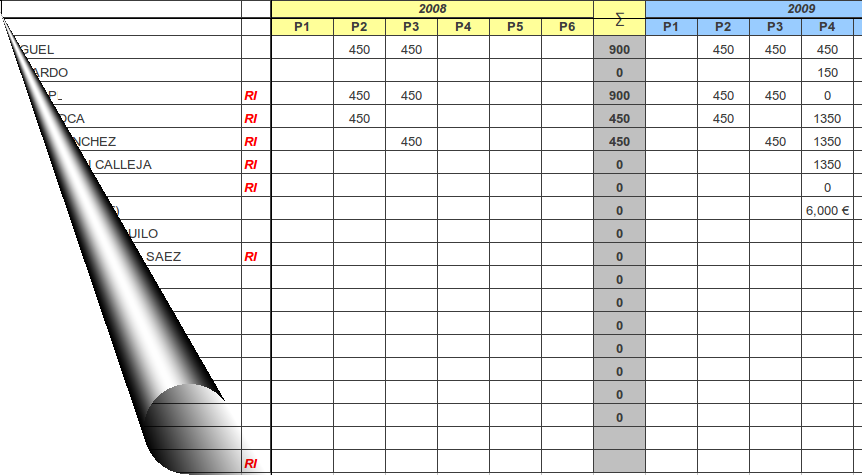
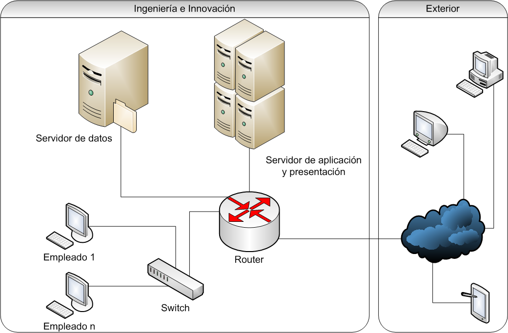
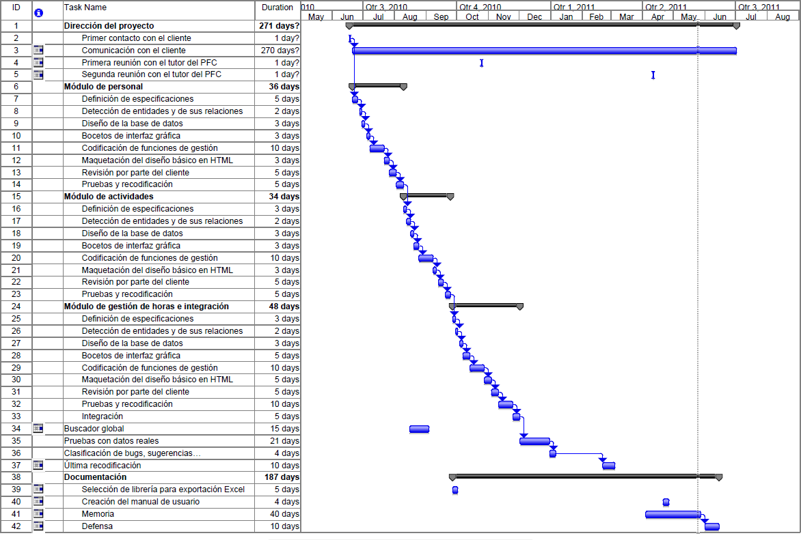
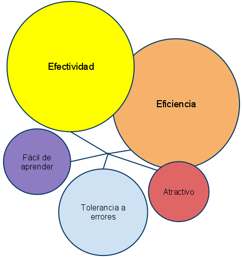
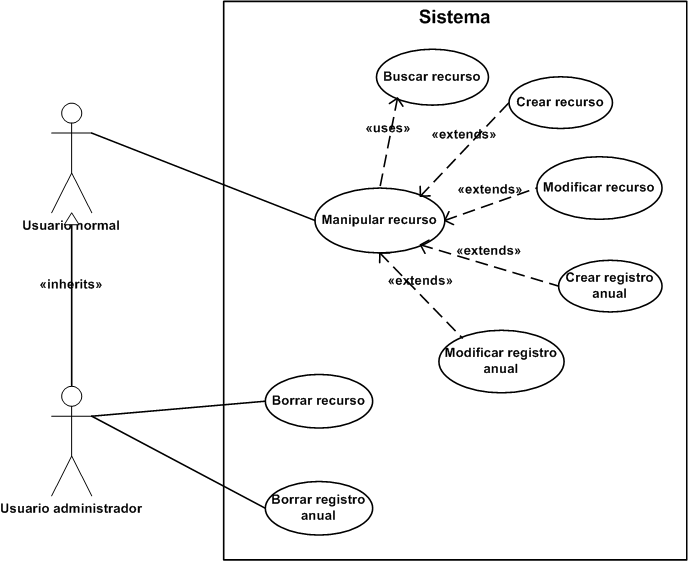
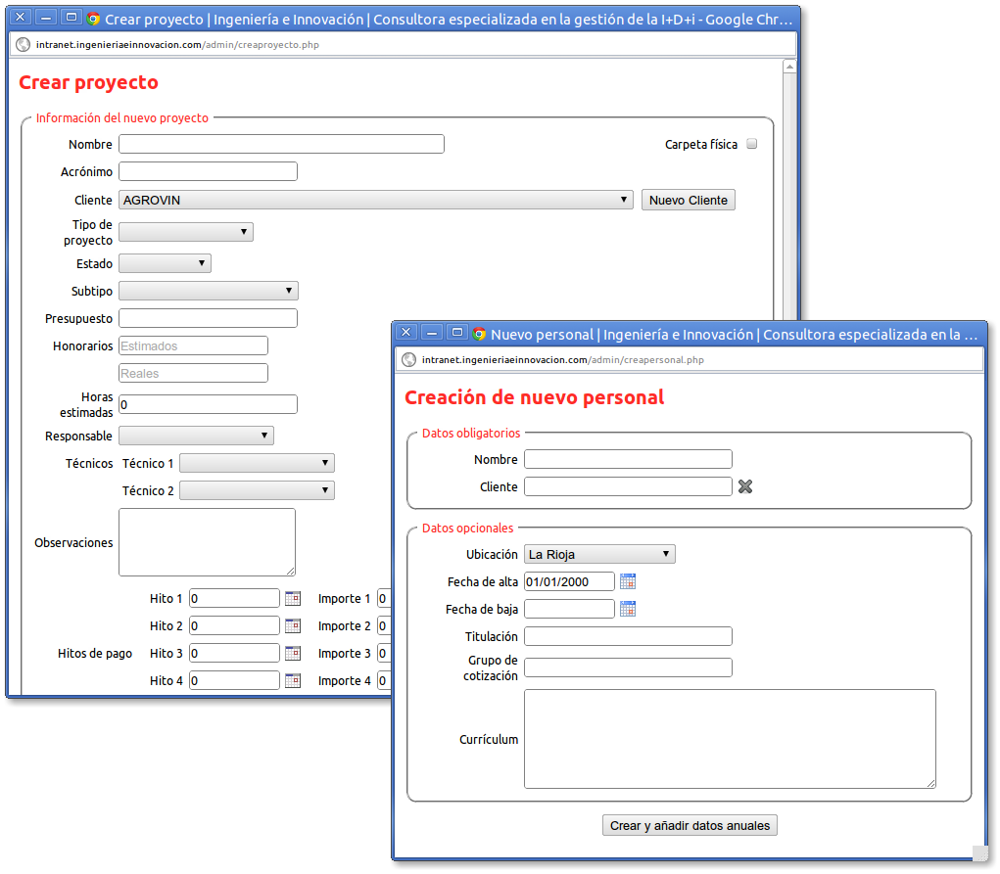
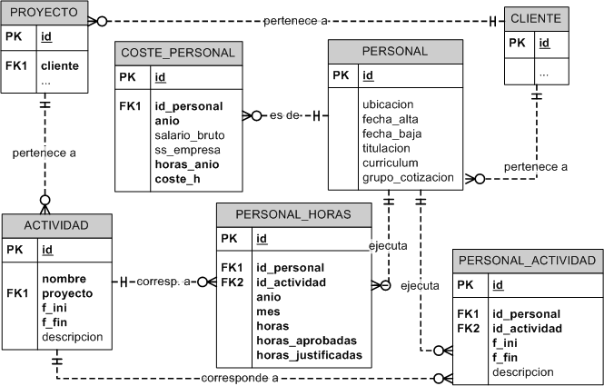
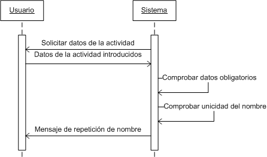
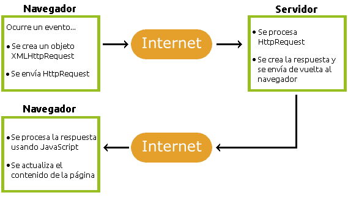
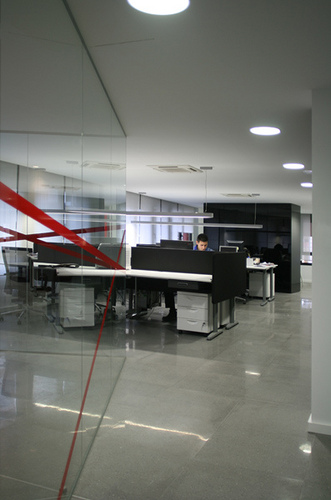

DEFENSA PFC
HERRAMIENTA DE APOYO PARA LA GESTIÓN DE RECURSOS HUMANOS EN EL DESARROLLO DE PROYECTOS DE I+D
Autor: JAVIER CEJUDO
Director: ÁNGEL LUIS RUBIO
ANTECEDENTES
- Cliente: A&B Ingeniería e Innovación, S.L.
- Servicios avanzados en gestión de la innovación y de los procesos de I+D
- Intranet de gestión: usuarios, clientes, proyectos, expedientes...
- Prácticas de empresa
- Actividades variadas...
- ... y por fin, la gestión de recursos
NECESIDAD (1)
- Gestión de las concesiones y justificación ADER:
- donde antes solamente se exigía un desglose anual, se pasó a exigir un detalle mensual desglosado por las actividades
- La metodología previa no era escalable
- No aprovechaba la información de que ya se disponía
- No favorecía la detección de inconsistencias
NECESIDAD (2) | Gestión previa
NECESIDAD (y 3) | Comparativa
| previa | actual | |
|---|---|---|
| división mensual por actividades | ✖ | ✔ |
| verificación de límite de horas | ✖ | ✔ |
| bajo mantenimiento | ✖ | ✔ |
| informes automáticos | ✖ | ✔ |
| registro de coste/hora | ✖ | ✔ |
| fecha y responsable de actualización | ✖ | ✔ |
| proyectos en colaboración | ✖ | ✔ |
DESCRIPCIÓN (1) | Objetivos
- Gestionar recursos humanos
- Gestionar actividades de proyectos
- Gestionar asignaciones de horas
- Generar informes automáticos
- Detectar inconsistencias
... y hacerlo de manera que resulte relativamente sencillo para el usuario agilizando la introducción de los datos y facilitando la búsqueda
DESCRIPCIÓN (2) | Tecnologías
WAMP
DESCRIPCIÓN (y 3) | Arquitectura
CALENDARIO (1)
- Comunicación constante con el cliente
- Comunicación con el director
-
Desarrollo módulo a módulo
- Personal
- Actividades
- Distribución de horas e informes
- Buscador (en ratos libres)
- Periodo de inactividad
CALENDARIO (y 2) | Cronograma
ANÁLISIS (1) | Usabilidad

ANÁLISIS (y 2) | Casos de uso

DISEÑO (1) | Interfaz

DISEÑO (2) | Base de datos

DISEÑO (y 3) | Sistema
- Paradigma imperativo
- Multitud de funciones

IMPLEMENTACIÓN (1)
Lenguajes y tecnologías
|
Librerías
|
|  | |
IMPLEMENTACIÓN (y 2)
Algoritmo de distribución de horas
- Recogida de datos
- Registrar datos de la asignación
- Cálculo de días laborables (horas/día)
- Cálculo de meses completos
- Asignación para el primer mes
- Asignación para los meses intermedios ↺
- Asignación para el último mes
PRUEBAS (1)
- No ha habido un plan sistemático de pruebas...
- ... excepto para el algoritmo de distribución de horas
$mes_inicio = rand(1,12);
$anio_inicio = rand(2010,2036);
$dia_inicio = rand(1,date('t',mktime(0,0,0,
$mes_inicio,1,$anio_inicio)));
$fecha_inicio = mktime(0,0,0,$mes_inicio,
$dia_inicio,$anio_inicio);
$fecha_fin = mktime(0,0,0,$mes_inicio,
$dia_inicio + rand(0,800),$anio_inicio);
$horas_dia = rand(1,900) / 100;
PRUEBAS (2)
5% de errores (1 de cada 20)
y siempre en marzo y/u octubre
- Fecha de inicio: 15/02/2011
- Fecha de fin: 11/04/2012
- Horas límite: 2368
- Duración en horas: 2368
- Horas por día: 8
- Horas asignadas: 2360
- ¿Éxito?: No!
- Diferencia: -8
PRUEBAS (y 3) | La solución
Sustituir...
$fecha_actual += 86400; //24*60*60=86400
por...
$fecha_actual =
mktime(0,0,0,
date('m',$fecha_actual),
date('d',$fecha_actual) + 1,
date('Y',$fecha_actual)
);
CONCLUSIONES (1)
|
 |
CONCLUSIONES (y 2) | Algunos datos
- Hay 550 registros anuales de 210 empleados y
- 118 actividades en 41 proyectos
- pertenecientes a 22 clientes
- para sumar un total de
- 233111 horas presentadas y
- 178629 horas justificadas